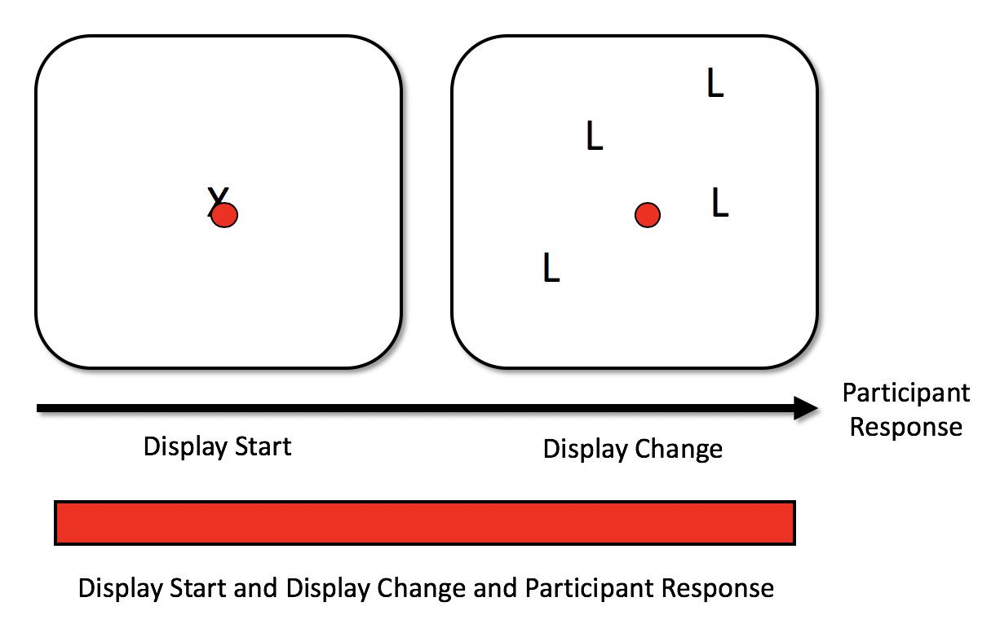

Chapter 3 Functions Overview
3.1 The Basics
The functions in eyeTrackR are mostly split up into two categories: Organise functions and Analyse functions.1
Organise functions are there to help you clean and organise your data.
Analyse functions are there to work out means of common dependent variables and put them together in a format that can easily then be analysed by standard statistical methods (e.g., ANOVAs), as well as visualising those dependent variables.
For most of my projects, I have two key sets of files:
- ORGANISE__markup.R : this marks up the dataset and cleans it, as you’ll see in this chapter.
- ANALYSE__XYZ.R : this either contains all of my analyses (if there aren’t that many), OR I split this file up, so that I have one ANALYSE__XYZ.R file for each dependent variable.
Here, I’ll begin by giving you an overview of how and why the organise and analyse functions are necessary, and what they do. The remaining chapters involve walkthroughs describing how to use these functions in practice.
3.2 Organise Functions
There are a handful of key tasks that take place in the organise functions. They are as follows:
- Marking up events in each trial.
- Removing outliers or other fixations that you’re not interested in.
I’ll now talk about each of these in detail before providing a walkthrough of the functions with example code and data.
3.2.1 Marking up Events
In a typical study, there will be multiple events in a single trial. For example, you might ask participants to fixate a certain point, after which the main display is presented. Then, the participant is given a task of some kind. In the example below, they are given a visual search task wherein they press one button one a response box if they see a T shape, and a different button if not T shapes are present. Their response then terminates the trial. Here’s a diagram:

Here, we assume that when there is an event or display change of some kind, you send a ‘message’ to the eye-tracker. These messages are recorded within a fraction of a second of being sent, meaning that they have a high level of temporal accuracy. Let’s add another bit of information to the diagram to signify the messages being recorded in the data. These are the bottom row of arrows with text written in green:
For this example, there are three events, and each is recorded with a message in the data:
- Message saying ‘DISPLAY_START’: Display fixation point.
- Message saying ‘DISPLAY_CHANGE’: Display a trial. Again, participants here search for a T shape amongst L shapes.
- Nessage saying ‘BUTTON_PRESS’: Participant response. They press one button (button XYZ) if they spot a T shape, and a different button (button XYZ) if there are no T shapes present.
Even if you have the most carefully-controlled study, it’s unlikely that even the first and second of these events will occur at the same time in each trial. There will be variability when they occur. This means you can’t just assume that an event occurred at the same time each trial: you actually have to check the timings for each trial on an individual basis. If you don’t do this, in a best-case scenario, you’ll be adding noise to your measures, and in a worst-case scenario, your results will be incorrect.
So, the solution is to examine when each event occurred for that participant and for that trial. The functions relating to events and contingencies enable you to do this. What eyeTrackR does for you is gives you full control of how these events, and the different ways they can pan out, can arise. In doing so, it gives you control over which trials and fixations to include or select into your final analyses. The first aspect of this control and organising process is to talk about contingencies.
3.2.1.1 Contingencies
Contingencies enable you to draw together the events in a trial. Imagine our simple example above. A participant may make fixate the fixation cross (the green circle in the image below), then make several more during the main trial (the yellow circles in the image below) before making a response (which occurs during the fixation signified by the red circle). Indeed, in most experiments, you would probably hope they would do this2.

In the above example, you have a set of different fixation contingencies occuring. You have: * Fixation that overlaps the fixation point display and the search display. * Two fixations that occur during the search display. * One fixation that overlaps the search display event and the button press event.
Let’s add these in to the image, representing the fixations with a coloured bar represnting the time periods that they overlap with:
It helps to be selective about which of these you want to include in your analyses. The simple reason for this is the fact that, for example, the final fixation, which comprises not just a fixation at a location on an object but also a button press, will be longer, on average, than your fixations where a button press occurs. People have a tendency to hold their fixation while button pressing, thereby creating a substantial jump in the durations of fixations that co-incide with a button press.
To give an example, there’s a density plot below using the data from a paper of mine (Godwin et al. 2015). In the red you have the fixations that didn’t overlap with the button press response, and in the blue, you have the fixations that did overlap with button press responses. The means, for what they are worth with such skewed distributions, are 161ms for the fixations that didn’t overlap with a response and 215ms for those that did overlap with a response3.

To make things more complex, the situation described above is not the only way that events can unfold during a search trial. On some trials, participants will fixate the fixation point, and hold a fixation throughout the display of the main trial, and then make a response, without making any new fixations, as shown by the red circle in the example below:

The first point to consider here is that fixations of this type will naturally be longer than when a participant makes multiple fixations around a display - a fixation held throughout a trial will have a longer duration than one which is made right at the end of a trial. The question really is whether participants were actually searching in that trial at all. Trials like this will often be quite short, perhaps because the participant zoned out, perhaps because they could resolve the trial easily. But it helps to know what actually happened so you can again be selective and careful about removing trials where something ‘weird’ or unexpected happened.
Having set out just some of the ways that the contigencies can be mapped out, we can now put together a table of contingencies across all of the trials in our example experiment. These contingencies map out the different events that fixations coincide with. A full mapping is shown in the table below.
| DISPLAY_START | DISPLAY_CHANGE | BUTTON_PRESS | FIXATION_CONTINGENCY |
|---|---|---|---|
| X | DISPLAY_START | ||
| X | X | DISPLAY_START__DISPLAY_CHANGE | |
| X | X | X | DISPLAY_START__DISPLAY_CHANGE__BUTTON_PRESS |
| X | DISPLAY_CHANGE | ||
| X | X | DISPLAY_CHANGE__BUTTON_PRESS | |
| X | BUTTON_PRESS |
So this is where the contingencies used by eyeTrackR are helpful. Contingencies were developed to help you work out the various events that occurred during a fixation. They are there to help you make an informed decision about the fixations that you want to include in your analyses. The contingency functions add a column to your fixation report, called FIXATION_CONTINGENCY. This column tells you what events occurred during the fixation in question. Again, we’ll talk more about this in the walkthroughs in the next chapter, but the goal here is to familiarise you with the logic behind all of this.
Let’s take some examples in terms of the fixation contingencies. As the table above shows, if a fixation lasted through both a fixation cross and the main trial display, it would have a contingency of FIX_CROSS__MAIN_DISPLAY. If it only lasted through the fixation cross time period, it would have a contingency of FIX_CROSS. Likewise, if the fixation occurred only during the main display, it would have a contingency of MAIN_DISPLAY.
The nice thing about the way that contingencies work is that they are marked up automatically. All you have to do is tell EyeTrackR the names of the events to consider when labelling the FIXATION_CONTINGENCY column. This means that any contingencies which do occur can be detected, and, furthermore, also means that you can be clear about exactly what types of events are occurring during the fixations that you are analysing for your various measures. You can also omit and ignore events that you’re not interested in, or events that are there for checking purposes.
3.3 Analyse Functions
The analyse functions in eyeTrackR are there to provide some basic means both for analyses and for visualisations for commonly-analysed measures in eye-tracking. They include:
- Fixation count - mean number of fixations
- Fix duration - mean fixation duration
- Total time - mean total fixation time
- Saccade amplitude - mean saccade amplitude
- Visit count - mean number of visits to interest areas
For all of the above, you are given a data.table which includes not only the by-trial and by-participant means, but also the by-partiicpant means, as well as a table that is ready for plotting (i.e., includes means as well as SDs). All of the above allow you to group your data and aggregate by as many columns as you like.
There are more detailed examples of how this works in practice in the later walkthrough chapters.
References
Godwin, H J, T Menneer, C A Riggs, K R Cave, and N Donnelly. 2015. “Perceptual Failures in the Selection and Identification of Low-Prevalence Targets in Relative Prevalence Visual Search.” Attention, Perception & Psychophysics 77 (1): 150–9. https://doi.org/10.3758/s13414-014-0762-8.
Future versions may include OrganiZe and AnalyZe functions, who knows.↩
Or at least, without an eye-tracker, you would assume people do this and behave themselves as you expect.↩
I trimmed this down to fixations with a duration of less than 800ms, since there weren’t many higher than this. There were also a lot more of the fixations that didn’t overlap with a response (about 127,000) than those that did overlap with a response (just under 15,000). This is not surprising given that there is only one response per trial.↩